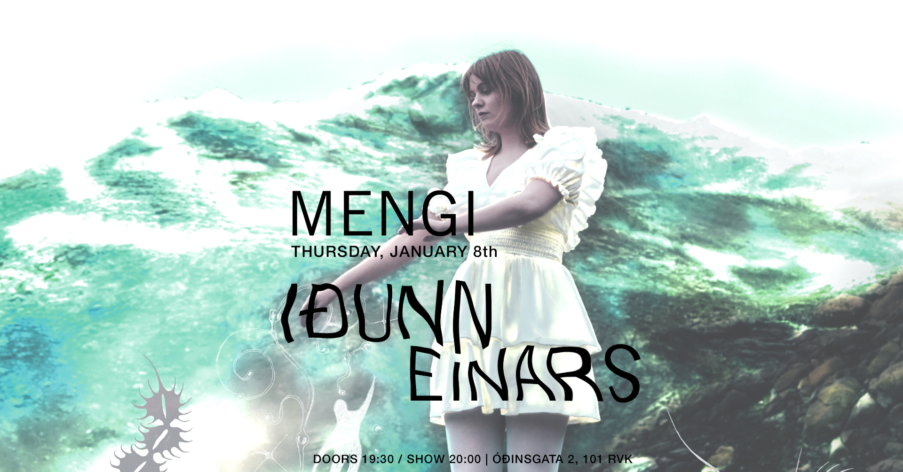
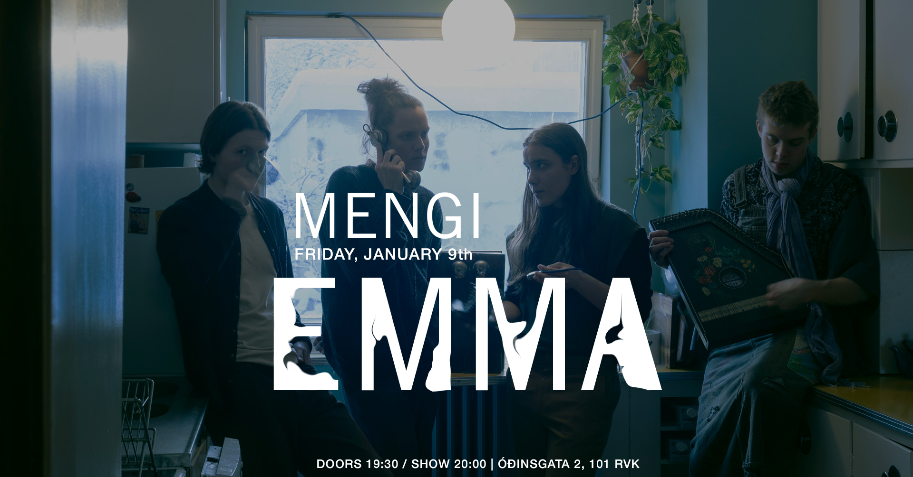
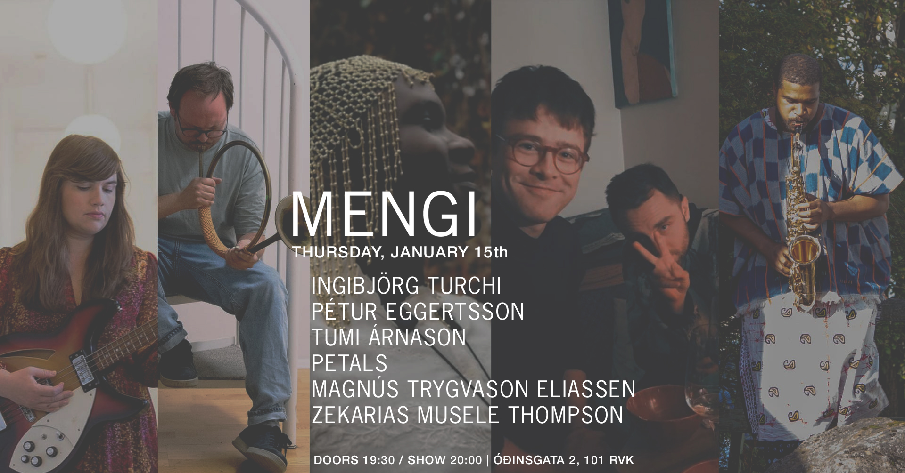
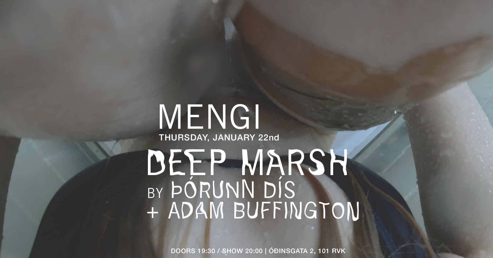
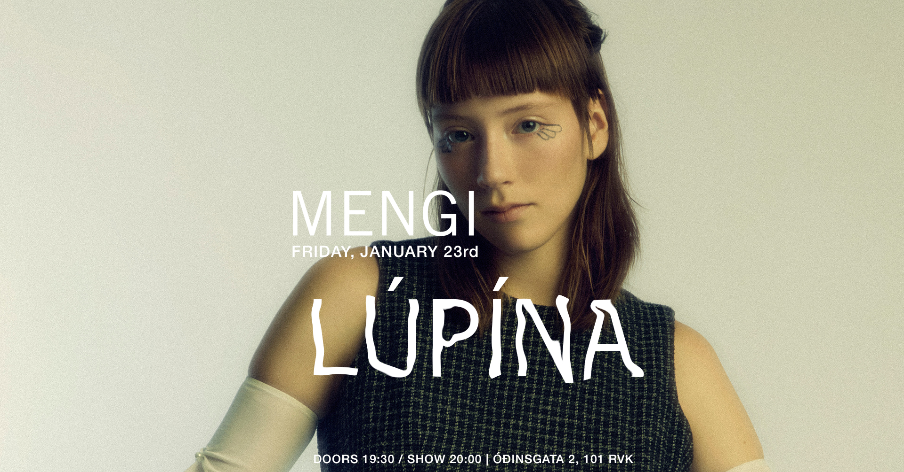
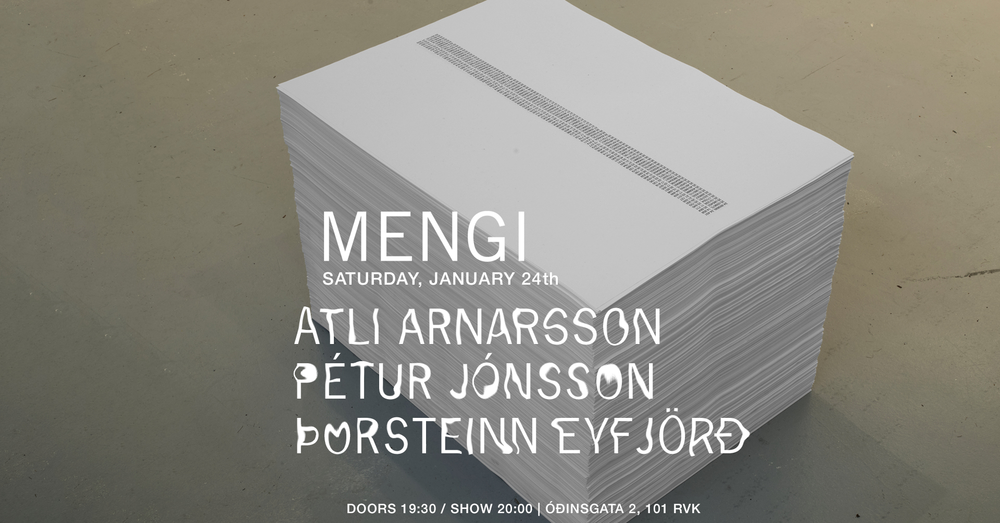
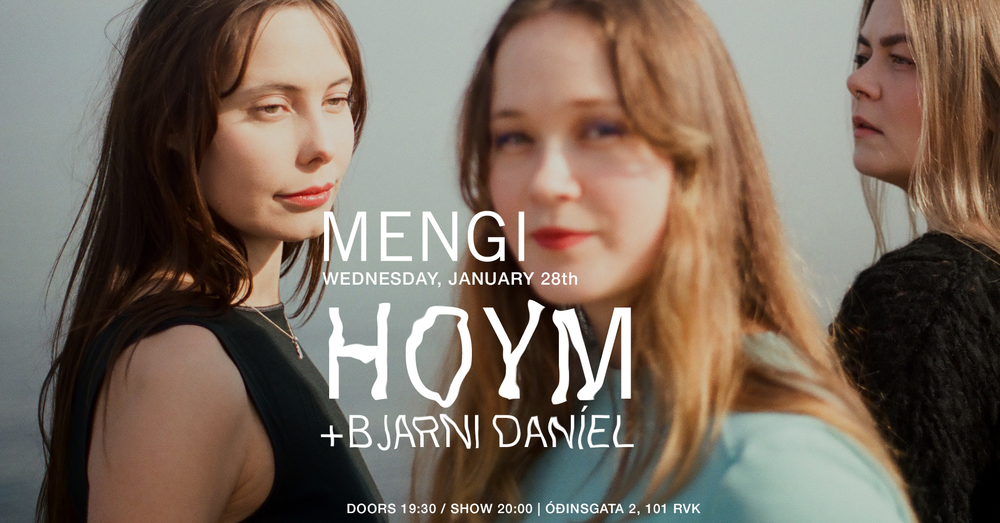

Upcoming Events
THU 08.01 Iðunn Einars
Tickets Thursday, January 8th IÐUNN EINARS doors 19:30 / show 20:00 2500kr / 2000kr students / pay what u can Iðunn Einars er tónskáld, fiðluleikari og söngkona sem skapar sína tónlist einhver staðar á milli klassíkur og popps. Fyrsta plata hennar í fullri lengd, Í hennar heimi, kom út í nóvember 2024 og vakti töluverða athygli. Í desember sama ár hlaut platan Kraumsverðlaunin og var hún einnig tilnefnd til plötu ársins í poppi á Íslensku tónlistarverðlaunum 2025. Á tónleikunum mun Iðunn spila lögin af Í hennar heimi ásamt bandi og strengjatríói. Þetta verða hennar síðustu tónleikar í bili þar sem hún kveður tónlist plötunnar áður en hún snýr sér að nýjum tónlistarverkefnum. Iðunn Einars is a composer, violinist and a singer. She creates her music somewhere between the genres of classical music and pop. Her first full length album, Í hennar heimi, was released in November 2024 and attracted considerable attention in her home town of Reykjavík. The album won the Kraumur Award 2024 and was nominated for the pop-album of the year at the Icelandic Music Awards 2025. In this concert Iðunn will perform the songs from Í hennar heimi with a band and a string trio. This will be her last concert for some time, serving as a closing chapter for the album as she moves on to new work.
fri 09.01 EMMA
Tickets Friday, January 9th EMMA doors 19:30 / show 20:00 2500kr / 2000kr students / pay what u can Come enjoy a cozy and intimate evening of music with atmospheric folk band Emma. They will be playing stripped back versions of songs from their 2025 debut Halidome, and maybe some new stuff sprinkled in to start 2026 off right!
THU 15.01 Turchi/Eggertsson/Árnason/petals/Eliassen/Thompson
Tickets Thursday, January 15th INGIBJÖRG TURCHI/PETÚR EGGERTSSON/TUMI ÁRNASON/PETALS/MAGNÚS TRYGVASON ELIASSEN/ZEKARIAS MUSELE THOMPSON doors 19:30 / show 20:00 2500kr / pay what u can Welcome to an evening of improvised music featuring Ingibjörg Turchi, Magnús Trygvason Eliassen, petals, Pétur Eggertsson, Tumi Árnason & Zekarias Musele Thompson. „... consider each performer as a complete unit with each having his or her own center from which each performs independently of any other, and with this respect of autonomy the independent center of the improvisation is continuously changing depending upon the force created by individual centers at any instance from any of the units.“
THU 22.01 DEEP MARSH by Þórunn dís / Adam Buffington
Tickets Thursday, January 22nd DEEP MARSH þórunn dís + Adam Buffington doors 19:30 / show 20:00 2500kr / 2000kr students / pay what u can Showing her video work in a different setting than is usual for her, þórunn dís hopes to open up a more intimate and complex experience. She invites you to a screening of her 15-minute piece, Deep Marsh, placing it more in the concept of a film rather than video. The film weaves together two frames, the first being her own view of her own body, caved in to create a private world only she has experience of and the other her same body from an outsider's view, attempting to set up a tent in challenging conditions while trying to make it look easy. Adam Buffington will open the event with a premiere of a new sound collage. // þórunn dís graduated with a BA in visual arts from Iceland's University of the Arts in 2021 and has since exhibited with others as well as solo, using video to document the personal and the mundane as an attempt to understand her own existence and reality. Adam Buffington is a sound artist and musicologist traversing the boundaries between practitioner and scholar. Specializing in contemporary art and music in Iceland, as well as Fluxus and later 20th-century developments, his research focuses on issues concerning interdisciplinarity, transnationalism, historiography and aesthetics. Alongside visual artist Tumi Magnússon, Buffington is the co-founder of Mumbling Eye, an independent record label for the publication of Icelandic sound art. Buffington earned a Ph.D. in Musicology from The Ohio State University in 2020, and is currently based in Reykjavik.
FRI 23.01 lúpína luppar
Tickets Friday, January 23rd LÚPÍNA LUPPAR doors 19:30 / show 20:00 3000kr Taking a new spin on her released and unreleased music, lúpína will create a unique experience where she will transport you into a world of vocal layers and live looping. This is a one time experience, where she will create sounds by only using loops of her voice, synths and piano. Join lúpína for this intimate re-creation of her music in an unplugged setting. Lúpína is an Icelandic/Norwegian singer, producer and songwriter. She began her journey by releasing her dreamy Icelandic synth pop single alein in autumn 2022. Since then, she has captivated audiences with her debut album ringluð in 2023 followed by MARGLYTTA in 2024. MARGLYTTA is an ode to herself, allowing people to see through her and her emotions - just like a jellyfish. Lúpína's unique style and impressive performances earned her the 2024 Iceland Airwaves Plus award, where she got the opportunity to perform at the New Colossus festival in 2025. This was followed by showcases at SXSW in Austin and Roskilde. Today, lúpína is a rising artist in the Icelandic and international music scene. 
SAT 24.01 Atli Arnarsson / Pétur Jónsson / Þorsteinn Eyfjörð
Tickets Saturday, January 24th ATLI ARNARSSON PÉTUR JÓNSSON ÞORSTEINN EYFJÖRÐ doors 19:30 / show 20:00 2500kr / 2000kr students / pay what u can INFO TBA - 3 solo sets, 1 trio
WED 28.01 HOYM / Bjarni Daníel
Tickets Wednesday, January 28th HOYM / Bjarni Daníel doors 19:30 / show 20:00 2500kr / 2000kr students / pay what u can HOYM will play songs from their debut EP, Lög frá Farbraut — a captivating six-track EP written and performed in Faroese and Icelandic. The EP is the result of a unique collaboration between Elinborg Pálsdóttir (FO), Lea Kampmann (FO), and Katrín Helga Ólafsdóttir/k.óla (IS), three voices in the Nordic music scene brought together by a shared artistic vision and deep-rooted friendship. The EP was recorded in the south of Iceland in January 2025, where the trio immersed themselves in the creative process. With a sound that blends introspective folk and acoustic vibes, Lög frá Farbraut explores themes of belonging, and emotional connection — bridging cultures, languages and landscapes. The songs were recorded live in a studio with a fireplace in the background, and the trio was gathered around one microphone, each with an acoustic guitar. All the songs were captured in just a few takes, preserving the raw emotion and intimacy of the moment. HOYM was born from the artists’ time together at the Rhythmic Music Conservatory in. Each member of HOYM has an established solo career, and numerous releases under their own names. Now, they unite their voices to form something new: a project grounded in femininity, presence and collaborative spirit. "We wanted to create something that celebrates both our shared roots and our individual voices. Writing together in our mother tongues — Faroese and Icelandic — felt like a powerful way to honour where we come from, while also pushing ourselves into new territory," the trio shares.

THU 29.01 Andrés Þór
Tickets Thursday, January 29th ANDRÉS ÞÓR: SOLO doors 19:30 / show 20:00 2500kr / 2000kr students Fimmtudaginn 29. Janúar kl. 20:00 mun gítarleikarinn Andrés Þór koma fram í Mengi með einleikstónleika. Á efniskránni mun bregða fyrir frumsömdum lögum eftir Andrés auk jazzstandarda og popplaga í útsetningum fyrir einleiks gítar. Á tónleikunum verður rík áhersla á hljómrænan textúr, spuna og nálægð. Þetta verður afslöppuð og hlý kvöldstund í nánu umhverfi þess mengis sem einleiksgítarinn býður uppá. Guitarist Andrés Þór will perform a repertoire of solo material at Mengi on January 29 at 20:00. The program features original compositions alongside jazz standards and selected pop songs, arranged for solo guitar. The performance focuses on harmonic texture and improvisation in an intimate and minimal setting. It will be an atmospheric and warm evening in the intimate setting that the solo guitar has to offer. Andrés Thor is an Icelandic jazz guitarist and composer known for his warm tone, melodic sensitivity, and deep-rooted sense of form and freedom. With a career spanning more than two decades, Andrés has established himself as a distinctive voice in the Nordic jazz scene, blending modern jazz expression with lyrical Scandinavian aesthetics. His latest album Hereby (Losen Records, 2022) features nine original compositions in a stripped-down trio format with double bassist Nico Moreaux and drummer Magnús Trygvason Elíassen. The album highlights the intimacy and conversational nature of the guitar trio, and reflects Andrés’s long-standing fascination with space, phrasing, and interplay. A new trio album is currently in the works, scheduled for release in early 2026. Rooted in both jazz tradition and his early love for rock music, Andrés’s sound draws from a wide range of influences—from the spaciousness of Nordic jazz to the expressive force of classic guitar-led ensembles. His playing is both lyrical and grounded, with a quiet intensity that reveals itself over time. Based in Iceland, Andrés has performed extensively across Europe and the U.S., appearing at jazz festivals, clubs, and concert halls. He has released seven albums under his own name and collaborated on numerous projects, including with groups such as Wijnen, Winter & Thor, ASA Trio, ASTRA, KuVenda and the Andreas Dreier Quartet. In addition to performing and composing, Andrés is active as an educator and has taught guitar and ensemble playing in various music schools and workshops. He has received several Icelandic Music Awards, most recently as Jazz Performer of the Year in 2024.

SAT 31.01 Hist og
Tickets Saturday, January 31st HIST OG doors 19:30 / show 20:00 2500kr / 2000kr students / pay what u can Founded in 2017 to distil a murky blend of jazz and electronic music, hist og is a trio featuring Eiríkur Orri Ólafsson on trumpet and electronics, Róberta Andersen on guitar, bass and synth, and Magnús Trygvason Eliassen on drums and percussion. Through the lens of their shared musical language, they explore a Day-Glo lit ruminative world of improvisation, jazz and electronic music. Hist og has released three albums, days of tundra (2019), hits of (2020), and holy ghost of (2023). all three records have received wide praise, harvesting six nominations to the Icelandic Music Awards, a seat on the venerated Kraumur list in 2019 and 2020. Days of Tundra was named "improv of the year" by Morgunblaðið in 2019. Music critic Arnar Eggert Thoroddsen wrote "smashing stuff … every song is rigidly stamped by the seal of this super-trio." Kevin Whitlock of Jazzwise wrote this about their 2024 Reykjavík Jazz Festival appearance: "they are at once thunderous, producing huge walls of sound, and spacey; while also laying down serious grooves. […] They'd go down a storm at a venue like London's Café OTO – let's hope they visit the UK soon." The members of hist og have worked with countless outfits over the years, such as múm, Sin Fang, Amiina, Sigur Rós, Kira Kira, Seabear and others. they have also collaborated with supreme jazz entities such as ADHD, Hilmar Jensson, Skúli Sverrisson and Mógil. // Tríóið hist og var stofnað í lok árs 2017 til þess að rugla saman reitum raf-og djasstónlistar. Tríóið skipa Eiríkur Orri Ólafsson, sem leikur á trompet, trommuheila og hljómboð, Róberta Andersen á gítar, bassa og hljómborð og Magnús Trygvason Eliassen á trommur og slagverk. Meðlimir tríósins beina stækkunarglerinu að sameiginlegum snertifleti sínum, með innhverfri, úthverfri og slagþungri blöndu af djass, raf-, og spunatónlist sem kemur víða við. hist og á að baki þrjár plötur, Days of Tundra (2019), hits of (2020), og holy ghost of (2023). Allar hlutu þær mikið lof og hefur hljómsveitin landað þremur tilnefningum til Íslensku Tónlistarverðlaunanna í djassflokki bæði árin, sem og sæti á Kraumslistanum 2019 og "Spuni Ársins" sama ár hjá Morgunblaðinu. Um hits of skrifaði Arnar Eggert Thoroddsen hjá Morgunblaðinu ma. "Hörkustöff … stimpill þessa ofurtríós kirfilega á öllum smíðum." Allar plöturnar hafa hlotið sæti á Kraumslistanum. Breska tímaritið Jazzwise hafði þetta að segja um tónleika þeirra á Jazzhátíð í ágúst síðastliðnum: "they are at once thunderous, producing huge walls of sound, and spacey; while also laying down serious grooves. […] They'd go down a storm at a venue like London's Café OTO – let's hope they visit the UK soon." Meðlimir hist og hafa starfað um árabil með hinum ýmsustu hljómsveitum, svo sem múm, amiinu og Sin Fang, Sigur Rós, Kiru Kiru, Benna Hemm Hemm og Seabear, ásamt ótal samstarfsverkefna á sviði djasstónlistar með ADHD, Hilmari Jenssyni, Skúla Sverrissyni og Mógil.